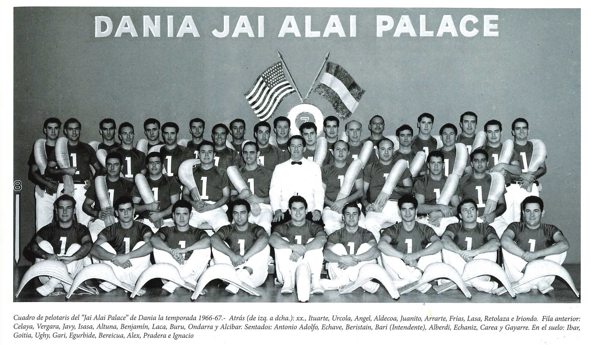
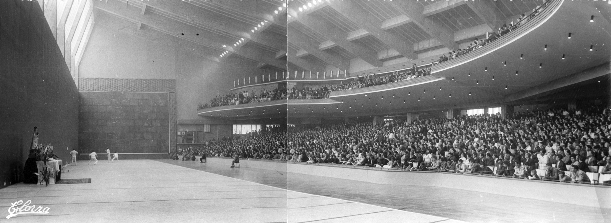
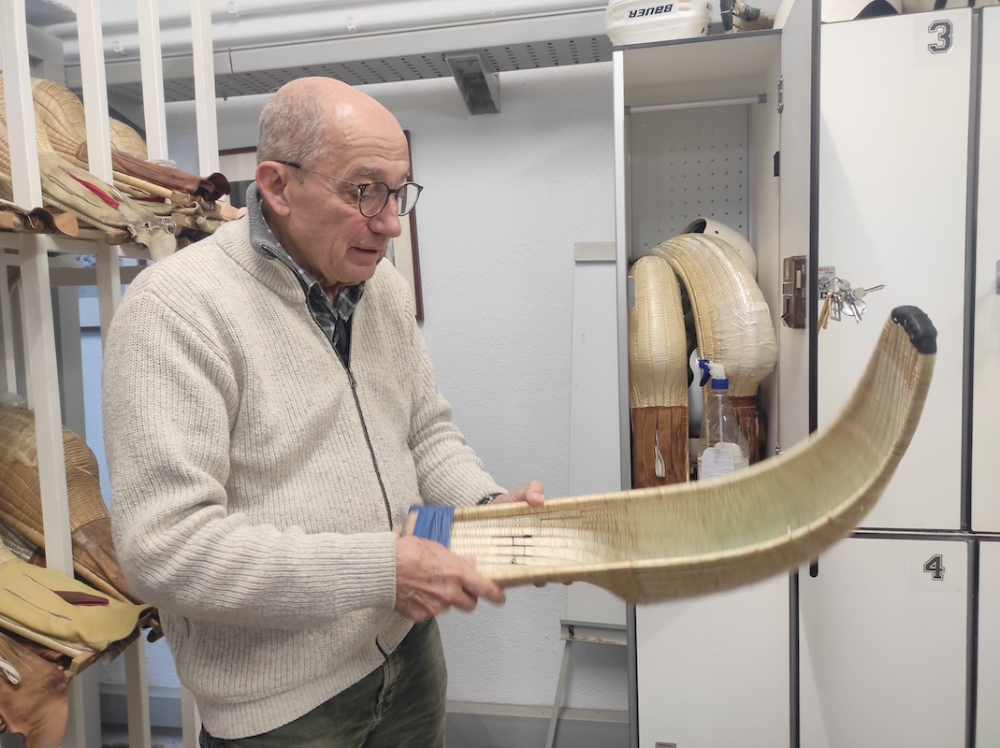

En el corazón del País Vasco, donde la tradición se mezcla con la pasión deportiva, Gernika-Lumo se ha convertido en un símbolo vivo de la cesta punta, una de las modalidades más espectaculares y rápidas de la pelota vasca. Este deporte, también conocido mundialmente como Jai Alai, ha encontrado en esta villa vizcaína uno de sus templos más emblemáticos: el Frontón Gernika Jai Alai, conocido cariñosamente como la catedral de la cesta punta.
HISTORIA DE CESTA PUNTA
La historia de la Cesta Punta en Gernika: tradición, arte y velocidad vasca.
Orígenes del juego
La cesta punta tiene su origen en el siglo XIX en el País Vasco francés, especialmente en la zona de Lapurdi. Surgió como una evolución del Joko Garbi, una modalidad tradicional que utilizaba una cesta más pequeña. Con el paso del tiempo, los pelotaris comenzaron a modificar el tamaño y la curvatura de la cesta para aumentar la velocidad y distancia del lanzamiento, dando lugar al deporte que hoy conocemos. El nombre Jai Alai, que significa “fiesta alegre” en euskera, fue popularizado por los frontones del País Vasco y más tarde por los que se construyeron en América.
La llegada a Gernika y el nacimiento de un icono
Gernika abrazó pronto esta disciplina y en la década de 1960 dio un paso decisivo con la construcción del Frontón Gernika Jai Alai, inaugurado en junio de 1963. El proyecto fue obra del arquitecto Secundino Zuazo, quien diseñó un edificio moderno y funcional, con una espectacular bóveda y una acústica que potencia el eco de la pelota golpeando el frontis. Desde su inauguración, el frontón se convirtió en un referente no solo en Euskadi, sino también a nivel internacional. En su cancha han jugado algunos de los mejores pelotaris del mundo, muchos de ellos nacidos o formados en la propia Gernika, donde la cesta punta se vive con auténtica devoción.
Auge, declive y resurgimiento
Durante las décadas de los 70 y 80, la cesta punta vivió una época dorada. Numerosos pelotaris de Gernika y del País Vasco viajaron a Estados Unidos, México o Filipinas, donde el Jai Alai se convirtió en un espectáculo de masas y una importante fuente de ingresos. Sin embargo, a finales del siglo XX, la modalidad sufrió un declive. El cierre de frontones y la pérdida de interés del público afectaron también a Gernika, aunque el frontón se mantuvo como símbolo de resistencia y orgullo cultural. A partir de los años 2000, y especialmente desde 2017, con la renovación de la Escuela de Cesta Punta de Gernika, comenzó un proceso de revitalización. Nuevas generaciones de jugadores se han formado en su cancha, combinando tradición y modernidad, y manteniendo viva una pasión centenaria.

Identidad y cultura vasca
La cesta punta en Gernika es mucho más que un deporte. Es una herencia cultural, un punto de encuentro entre pasado y presente, entre tradición y modernidad. El Frontón Gernika Jai Alai continúa siendo un faro para la pelota vasca y un orgullo para toda la comarca de Urdaibai. Porque en Gernika, la cesta punta no se juega… se vive. 